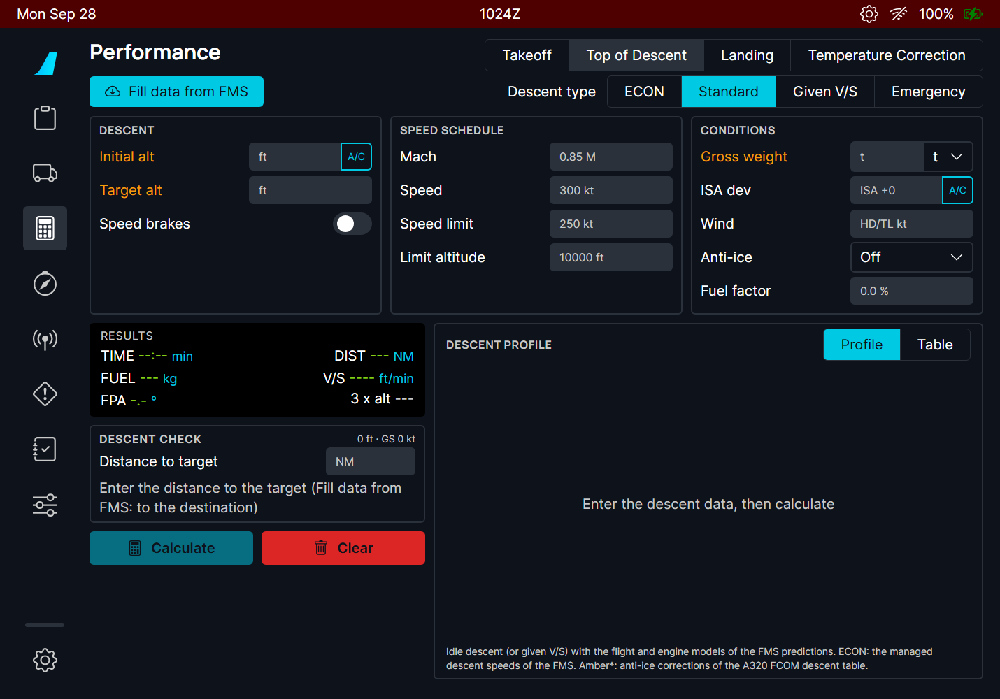
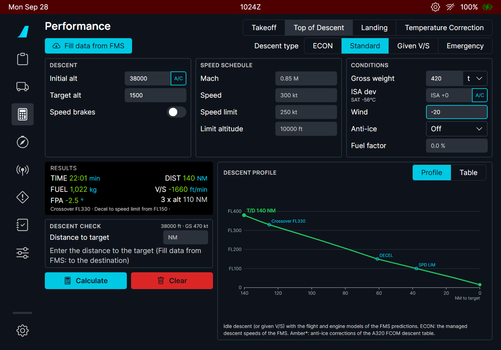
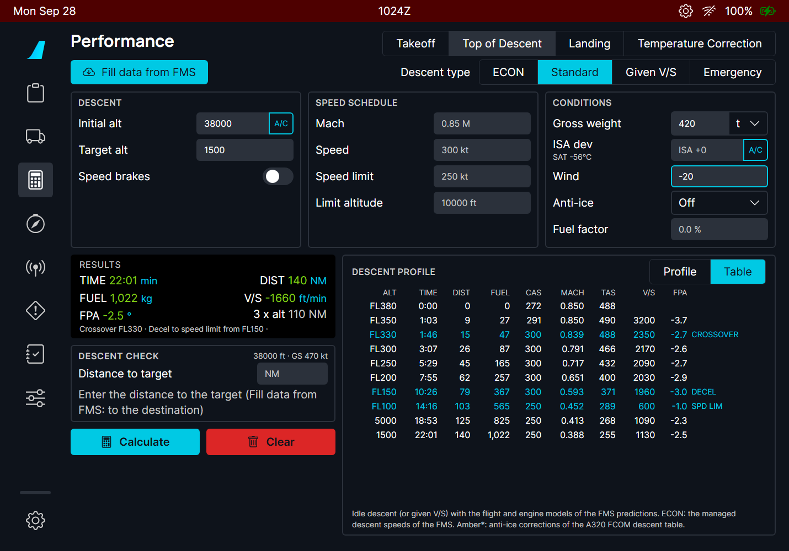
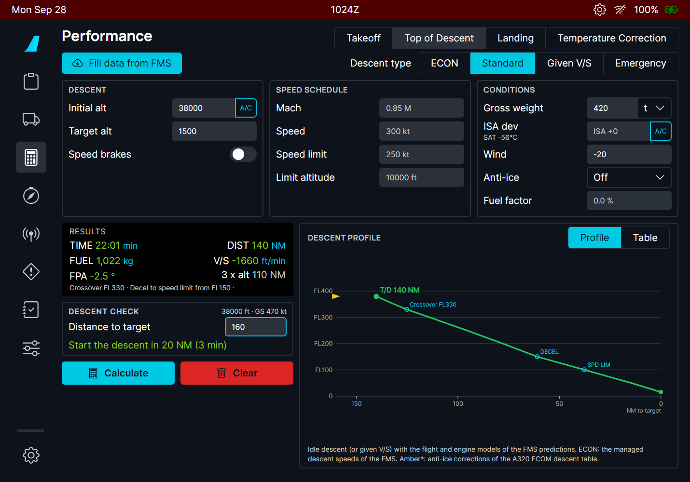
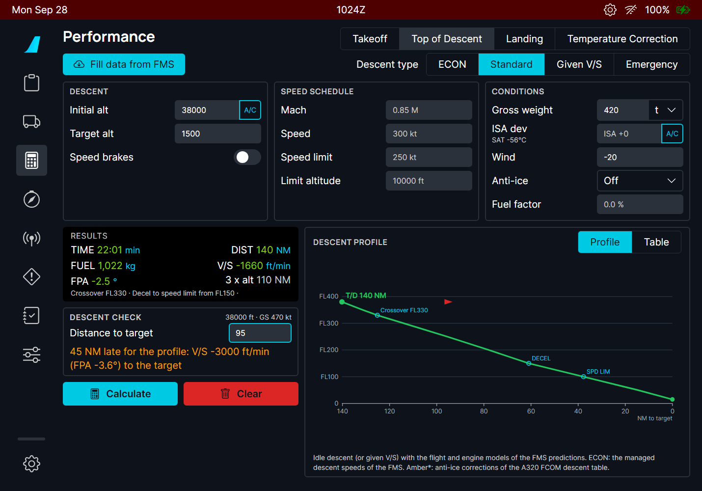
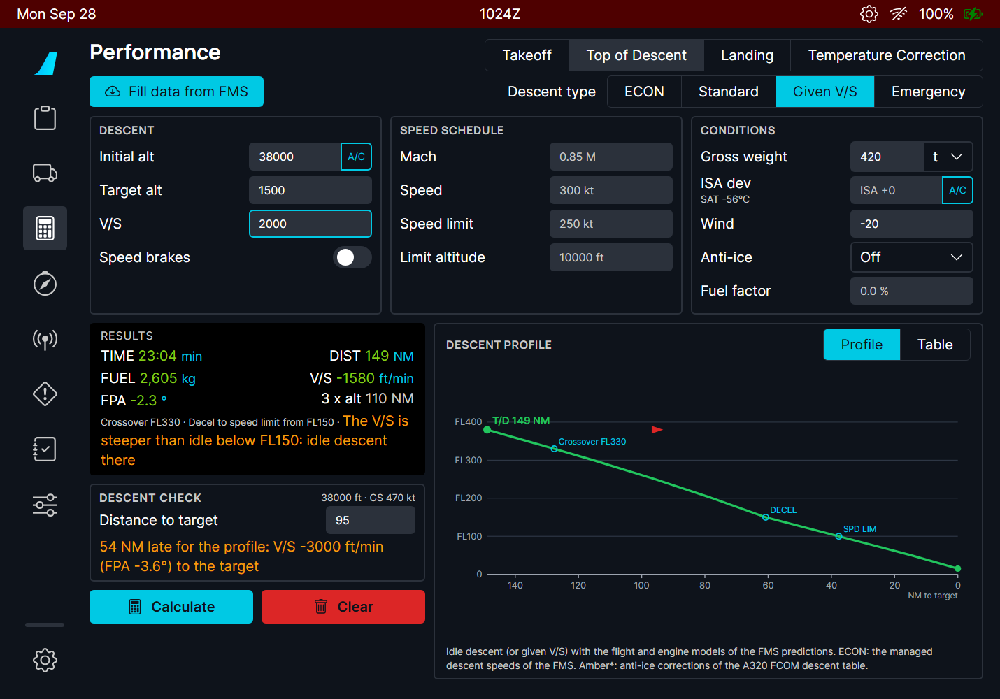
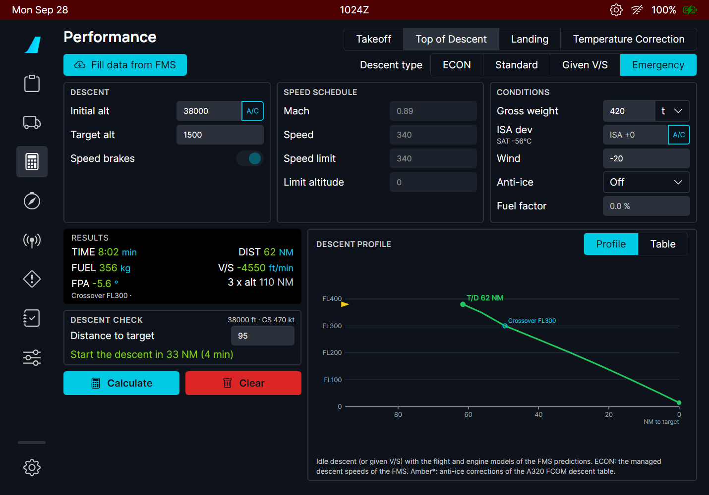
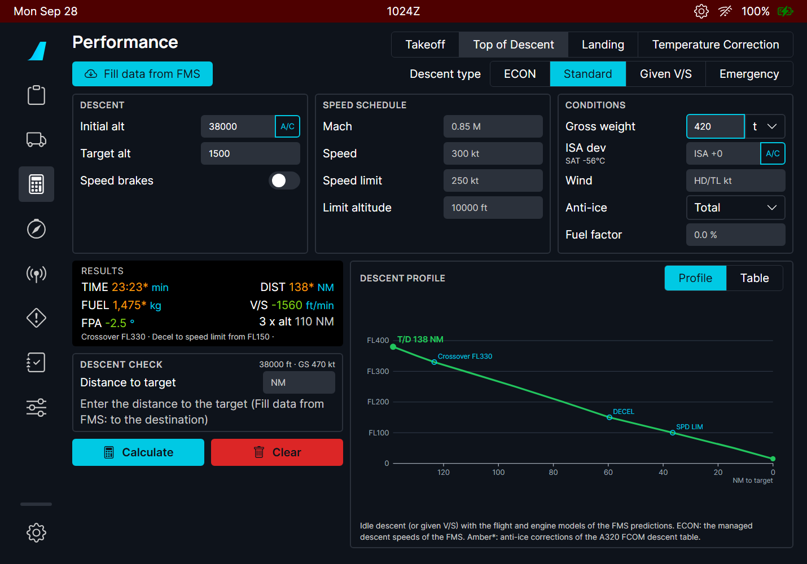

The FMS computes the top of descent (T/D) for the managed descent. The crew still needs other answers: how long an emergency descent takes, where to start a descent at a given V/S, whether the aircraft is late on the profile after a shortcut, and a cross-check of the FMS T/D. The A380 OIS has an in-flight descent module for this (FCOM PER-IFT-DES); this page does the same on both aircraft, and replaces the old Top of Descent calculator.
It uses the same flight and engine models as the FBW FMS predictions, so its T/D agrees with the one drawn on the ND for the same inputs.

| Part | Contents |
|---|---|
| Fill data from FMS | Cruise level (or the current altitude when lower), destination elevation + 1500 ft, gross weight, the FMS speed limit, the ECON speeds and the distance to the destination. |
| Descent type | ECON: the managed descent speeds of the FMS. Standard: the FCOM speed schedule (A380 M.85 / 300 kt / 250 kt below FL100; A320 M.78 / 300 / 250). Given V/S: a constant vertical speed. Emergency: MMO / VMO with the speed brakes. |
| DESCENT | Initial altitude (A/C: the current one) and target altitude; speed brakes. |
| SPEED SCHEDULE | Mach, speed, speed limit and its altitude. Empty = the standard values shown in grey. |
| CONDITIONS | Gross weight, ISA deviation (A/C: from the current temperature), wind component (positive = headwind, negative = tailwind), anti-ice (off / engine / total), fuel factor. |
| RESULTS | Time, distance, fuel, mean V/S and flight path angle, and the "3 × altitude" rule of thumb for comparison; the crossover altitude and where the aircraft slows to the speed limit. |
| DESCENT CHECK | With the distance to the target: when to start down, or how late you are. |
| DESCENT PROFILE | Profile chart or table every 5000 ft. |


The deceleration to the speed limit is flown on the -1° idle path of the FMS descent strategy, which is why the profile flattens between DECEL and SPD LIM.
Enter the distance to the target (Fill data from FMS enters the distance to the destination). The page reads the aircraft altitude and ground speed (shown top right of the box) and compares the aircraft with the profile. The aircraft is the triangle on the chart.


Given V/S adds a V/S field. The page flies that V/S with the thrust it needs. Where the V/S is steeper than an idle descent can give, the page flies idle there and says so in amber (the aircraft cannot descend faster at idle without speed brakes).

Emergency uses MMO / VMO with the speed brakes extended (the schedule fields turn grey).

ECON needs the FMS: it asks the FMS for its managed descent speeds. Without a flight plan in the FMS, a message says so and the page stays on the previous type.
Anti-ice (engine or total) raises the idle thrust and flattens the descent. Its effect uses the corrections of the A320 FCOM descent table (no A380 table is public): the values it changes turn amber with a star. The fuel factor (a percentage) scales the fuel burn, like the FMS PERF FACTOR.

| Situation | What you should see |
|---|---|
| Inputs missing | Amber labels; no results. |
| Any input changed | The results are cleared: press Calculate again. |
| Target above the initial altitude | Message "The target altitude must be below the initial altitude". |
| Initial altitude above the aircraft ceiling, or weight out of range | A message gives the limit (maximum altitude, or the weight range from the empty weight to the MTOW). |
| Given V/S steeper than idle | Amber line: idle descent below the altitude it names. |
| ECON without FMS flight plan | "No FMS data: enter a flight plan in the FMS". |
| Distance to target larger than the descent | Green "Start the descent in X NM (Y min)". |
| Distance shorter than the descent | Amber "N NM late for the profile" with the V/S and FPA needed. |
| Limitation | Why | What to do |
|---|---|---|
| The descent is a still-air profile plus a mean wind. | The wind is one component for the whole descent, as in the FCOM and OIS; the FMS uses the wind of each altitude. | Use the mean wind of the descent. |
| About 8 % longer than the A320 FCOM table. | The FCOM table is for the CFM56 A320; the FBW A320neo engine model idles differently. | Compare with the FMS T/D, which uses the same model. |
| Anti-ice values are estimates. | Only the A320 FCOM has anti-ice descent corrections. | - |
| No descent path constraints or approach. | The page computes a clean descent to one target altitude, not the FMS path with its constraints. | Use it as a cross-check of the FMS. |